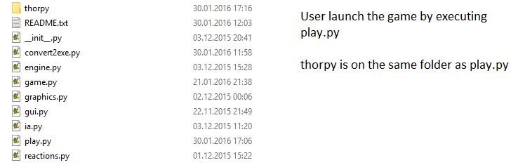

Tutorials - Distribute your application
Tutorials - Distribute your application
You will learn here how to distribute your application written with ThorPy. The first part concerns a cross-platform, script-based distribution, while the second part is about converting your code to executable file for windows.
Distribute a Pygame-ThorPy script (all plateforms)
If you want to distribute an application as a script, then you assume that users will have Python and Pygame installed on their machine, as well as any other library you used to code the application. If not, tell them to do so (this is actually the only tricky part).
Once your code is written, just add (copy/paste) the thorpy folder from when you installed it to the directory of the main script of your application. Here is an example from the game NinArow:
{kind=link}
This is all. Pack the entire folder containing the scripts and thorpy folder and distribute it.
Convert a Pygame-ThorPy script as an executable windows file
The advantage of this method is that users won't have to install Python neither any library on their computer in order to run your application, which is often much more practical for them. Also, in certain cases, if script distribution does not work properly on a given computer, it can be the solution to distribute it as an executable. One of the drawback of this method of distribution is that it produces much heavier files: while a script is typically a few kB, its corresponding weight, as a working .exe application, is several MB. Another disadvantage is that many antiviruses will detect the executable as a potential danger for the user's machine. This is user's responsibility to make its antivirus allow your application to run normally. Finally, it is advised to distribute your source code with the executable, so that users can see what they are executing.
The method that is presented here makes use of the famous module py2exe. You will need it in order to build executable files from your scripts. The script below provides a convenient way to set up the configuration of your distributed application (just follow the indicated steps):
1 2 3 4 5 6 7 8 9 10 11 12 13 14 15 16 17 18 19 20 21 22 23 24 25 26 27 28 29 30 31 32 33 34 35 36 37 38 39 40 41 42 43 44 45 46 47 48 49 50 51 | from distutils.core import setup
import os, glob, fnmatch, py2exe
"""Usage:
1. Fill the informations below
2. Go to thorpy's __init__ file and set THORPY_PATH equals to "./"
3. Open a console, go to the folder where this script is located, and type:
python convert2exe.py py2exe
4. That's all. Your executable is normally in 'dist' folder.
5. Don't forget to set THORPY_PATH to its original value.
"""
main_python_file = "play.py"
project_name = "TheNameOfYourProject"
project_url = "http://www.your-url.com"
project_version = "1.0"
project_license = "YourLicence"
author_name = "Your Name"
author_email = "your.email@fakemail.com"
copyright = "Copyright (c) 2016 Your Name"
project_description = "blah blah"
def add_folder_to_data(dist_folder_name, folder, end=""):
files = [folder+fn for fn in os.listdir(folder) if fn.endswith(end)]
data_files.append((dist_folder_name, files))
data_files = []
#add thorpy data
add_folder_to_data("data", "C:/Python34/Lib/site-packages/thorpy/data/")
#for your own data, follow instructions at thorpy.org/tutorials/distribution.html
setup( windows=[{'script':main_python_file, 'copyright': copyright}],
data_files = data_files,
name=project_name,
version = project_version,
description = project_description,
url = project_url,
author = author_name,
author_email = author_email,
license = project_license,
options = {'py2exe':
{'includes': [], # name of the modules that py2exe did not automatically detected
'excludes' : [], # modules to exclude that py2exe put in
'optimize' : 2, # Not necessary,
'bundle_files' : 2,
'compressed' : True}
}
)
|
As indicated in the script, you must modify a line from thorpy's __init__.py in order to make the executable use the path of thorpy's internal data. When all is finished, do not forget to set this line to its original state, otherwise you won't be able to properly use ThorPy from scripts on your computer.
Once you have followed the four steps that are given in the script, you are almost done. If your application uses data, put the data in 'dist' folder (just reproduce the same file hierarchy, using 'dist' as the root folder). Pack all into a zip file, and do not forget to write a README file that indicates user how to run the game (for example, go to dist folder and execute play.exe).